NUESTRA HISTORIA
Nuestros recuerdos
Cada fotografía guarda un momento,
una emoción y una pequeña parte
de nuestra historia.
Y aunque todavía nos quedan
muchísimas páginas por escribir,
estas son algunas de las que
ya guardo con muchísimo cariño.
Estas fotografías representan solamente algunos de los momentos que hemos compartido.
Cada una tiene un pequeño significado y juntas forman una parte de nuestra historia.
Para mi Moshi ❤️Pedacitos de nosotros
Momentos que quiero guardar para siempre.
El primer día 🐄❤️
Nuestra historia comenzó en VioletaNight, aunque no tengo una foto de ese momento. 🥹 Pero sí tengo muchos recuerdos lindos: tu traje de vaquita 🐄, cuando intenté raptarte 😂 y cuando te despeste a la vaca que llevabas para usarme como mochila WUAJAJAJA. ❤️ Así que aquí dejo un pequeño recuerdo del primer video en el que aparecí a tu lado. ✨
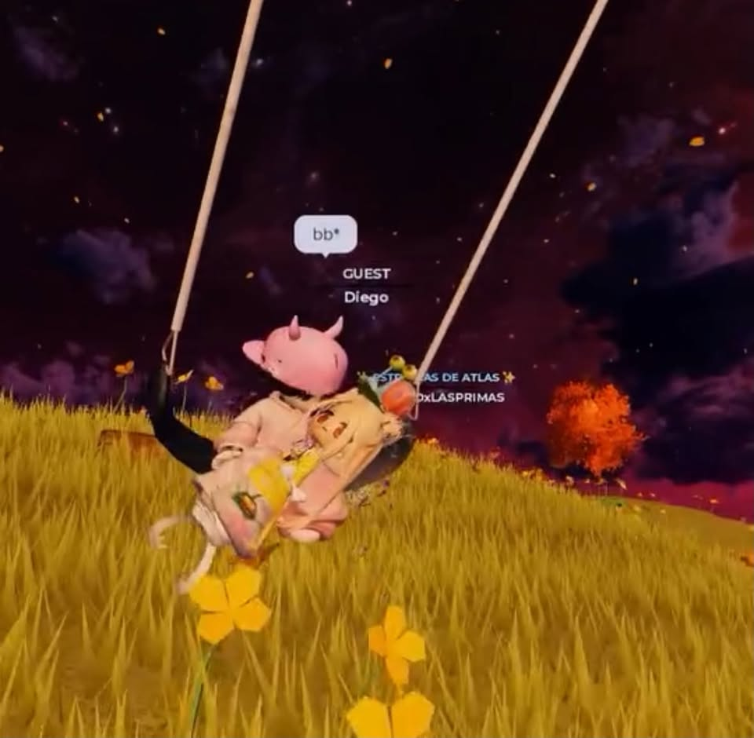
02El día donde nuestro amor floreció 🌸
Este fue el día en que mi amor por ti se intensificó. ❤️ Fue cuando empecé a darme cuenta de lo increíble que eras y descubrí que detrás de esa pantalla había una mujer maravillosa, increíble y muy wapa. 🥰✨
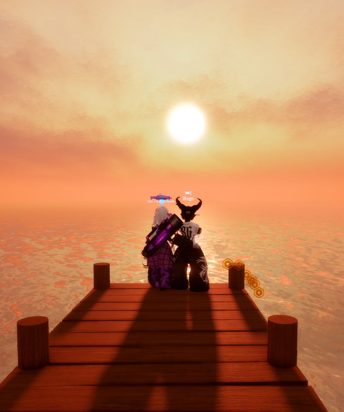
03El gran día 🌅
Cómo olvidar uno de mis días favoritos: el 6 de agosto. ❤️ Estuvimos en ese muelle viendo un lindo atardecer 🌅, nos columpiamos, conversamos, nos reímos y, entre nervios, te pregunté si querías ser mi novia. 🥹💗Ese momento marcó el inicio de nuestro amor, y por eso siempre tendrá un lugar especial en mi corazón. ❤️
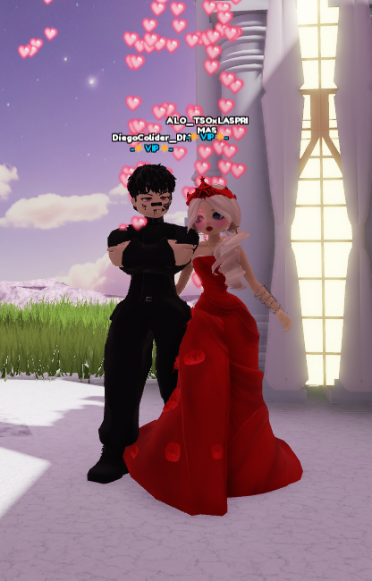
04Primera boda juntos
La primera boda a la que asistí en Roblox y también la primera a la que asistimos juntos. ❤️ Fue un momento muy lindo, pero no solamente por la boda… sino porque pude vivirla con la mejor compañía que podía tener: contigo. 🥰 Y aparte, míranos… bien wapos y formales. 😏🤵♂️💗
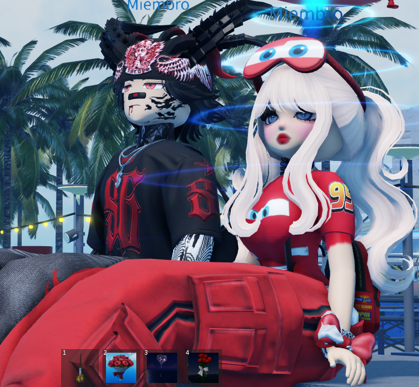
05Contigo 🌅
Ese día me llevaste a un servidor donde vimos el atardecer y el amanecer juntos. 🌅🌄 Nos conocimos un poquito más, nos regalamos flores 🌹 y hasta anduvimos en escobas. 🧹😂 Un día sencillo, pero lleno de pequeños momentos que me encantó compartir contigo. ❤️
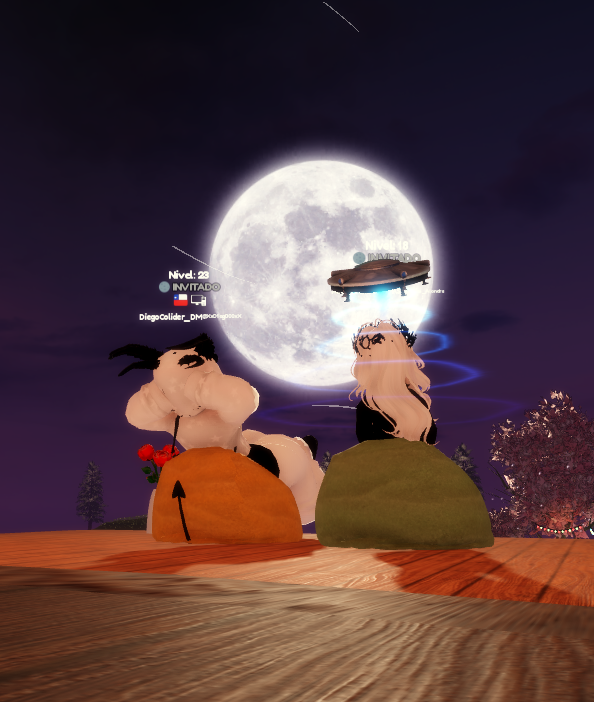
06Un momento juntos 🌙
Un momento en el que simplemente estuvimos conversando y disfrutando de nuestra compañía mientras mirábamos la luna. 🌙❤️ No necesitábamos hacer nada especial; estar ahí contigo ya hacía especial el momento. 🥰
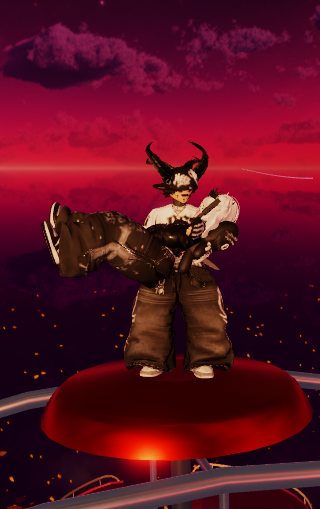
07Siempre tú 🌎
Esta foto me gusta muchísimo porque ese día te tenía en mis brazos. ❤️ Y viendo la foto, no puedo evitar pensar que estaba sosteniendo mi mundo entero entre mis manos. 🥹🌎 Quizás para cualquiera sea solo una foto bonita, pero para mí representa algo mucho más especial: tener cerquita a la persona que hace que mi mundo sea un poquito más bonito. 🥰❤️
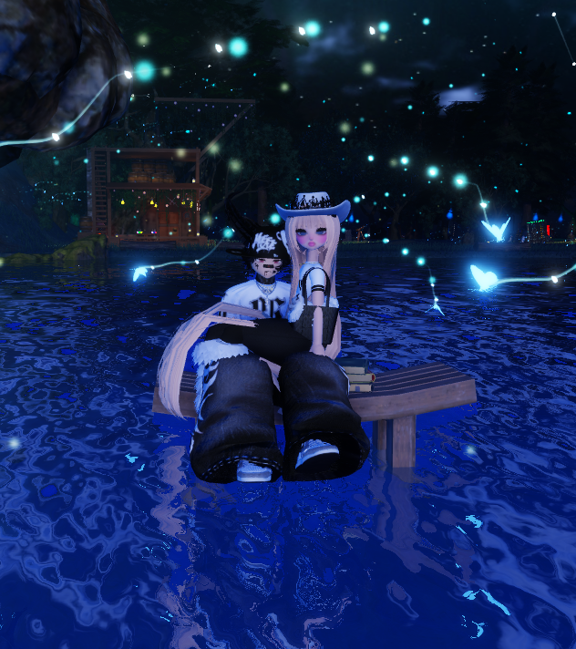
08Otro recuerdo juntos 💗
Sé que esta foto es una de tus favoritas… y a mí también me gusta muchísimo. 🥰❤️ Por eso no podía faltar en este álbum. ✨ Un pequeño recuerdo de nosotros que definitivamente merecía estar aquí. 💕
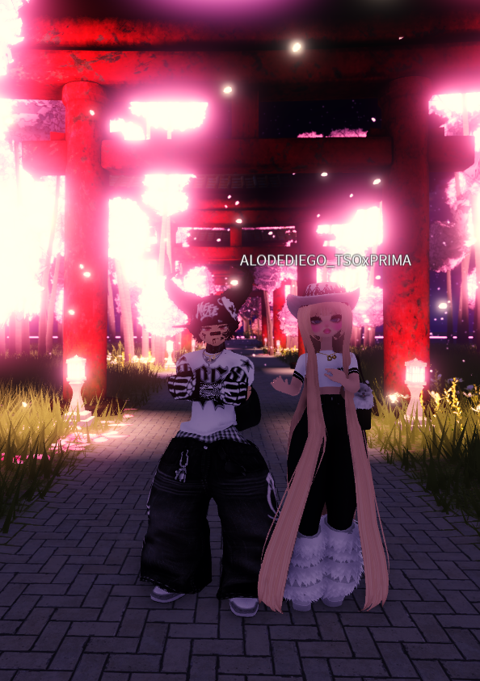
09Un día importante ⛈️
El día de esta foto fue un día un poco tenso, con un par de complicaciones. 🌧️ Pero justamente ese día entendí algo: que aunque los días se pongan grises, aparezca una tormenta y lo más fácil parezca abandonar, yo quiero seguir pasando esos momentos a tu lado. ❤️ Porque siempre habrá días buenos y días no tan buenos, pero yo te elijo a ti en todos ellos. 🥹❤️
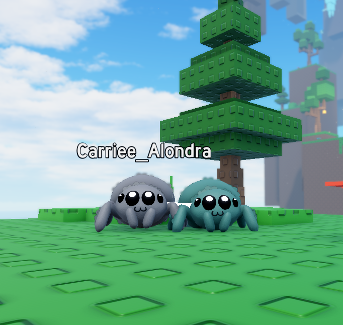
10Momento juntos 🕷️
Una fotito jugando como dos arañitas tiernas. 🕷️😂❤️ Simplemente nosotros haciendo tonterías juntos y pasándola bien. 🥰
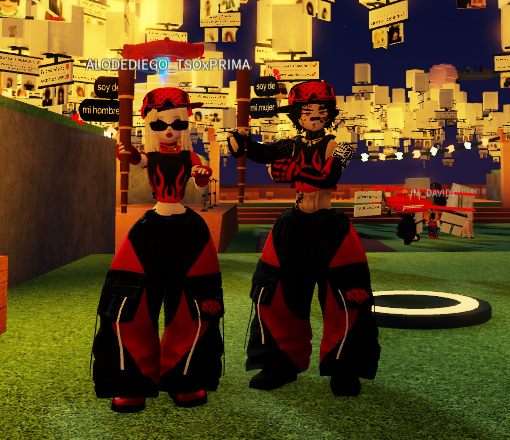
11Lamparita 💡
Cuando andábamos con nuestros trajecitos iguales 👕❤️ y fuimos juntos a prender una lamparita. 💡 Puede parecer un momento pequeño, pero son justamente esos pequeños momentos los que terminan convirtiéndose en recuerdos bonitos. 🥰✨
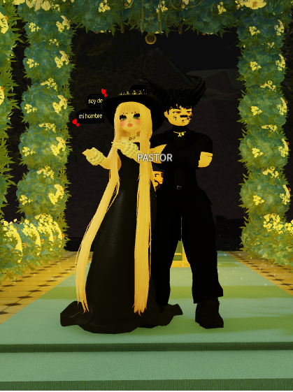
12Elegantes 🖤
Esta foto me gusta mucho porque estás con tu pelo largo 🥰 y los dos estamos vestidos de negro, bien elegantes. 🖤✨ Una de esas fotos en las que simplemente digo: qué wapos nos vemos. 😏❤️
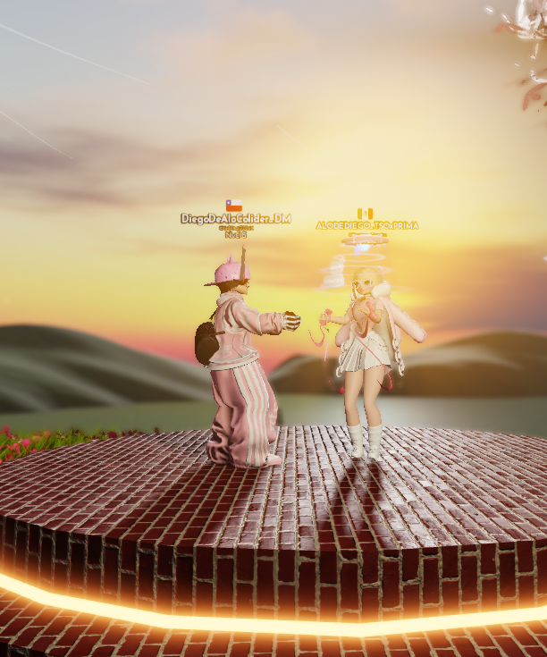
13Otro pedacito 💗
Una fotito bailando con el amor de mi vida. 🥰💃🕺 Los dos vestidos de rosadito y compartiendo otro pequeño momento juntos. 💗✨
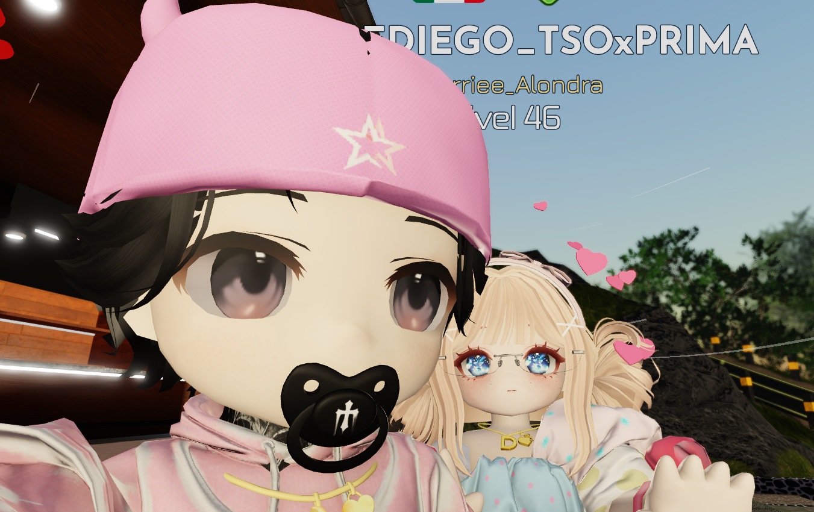
14Otro momento 🤍
Una linda selfie de nosotros. 🥰📸 Me gusta muchísimo esta foto porque salimos los dos bien tiernos y wapos. ❤️ Otro recuerdo que me encanta guardar de nosotros. ✨
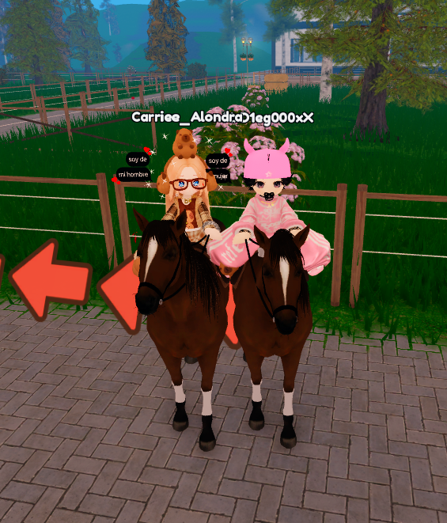
15Recuerdo 🐎
Un momento en el que anduvimos a caballo juntos. 🐎❤️ Se sintió muy bonito poder compartir ese momento contigo y cabalgar juntos. 🥰 Aunque nos faltaron los sombreros de vaqueros para completar el outfit. 🤠😂
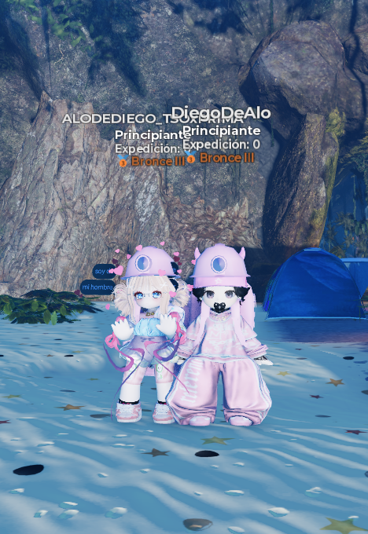
16Excursión 🪨
Un recuerdo de cuando fuimos a explorar las cuevas. 🪨🔦❤️ Otra pequeña aventura que tuvimos juntos y que terminó formando parte de nuestra historia. ✨
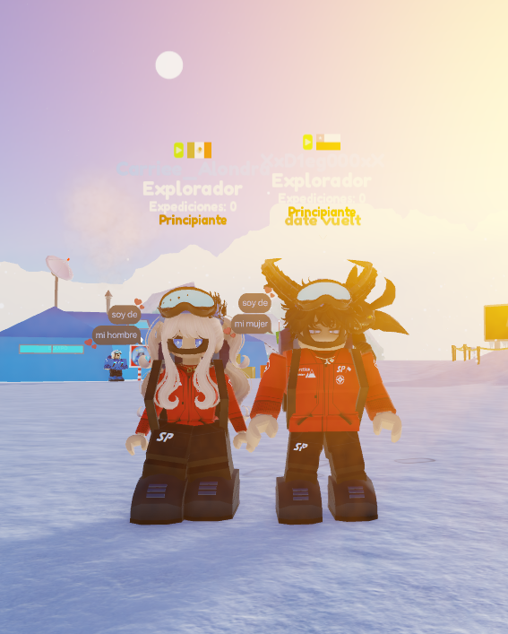
17Otra excursión ❄️
Aquí está nuestro viaje a la Antártida. ❄️😂 No sé qué fue lo que pasó ese día, pero recuerdo que me reí muchísimo contigo. WUAJAJAJA 🤣🤣🤣 Otro de esos momentos que simplemente me encanta recordar. ❤️
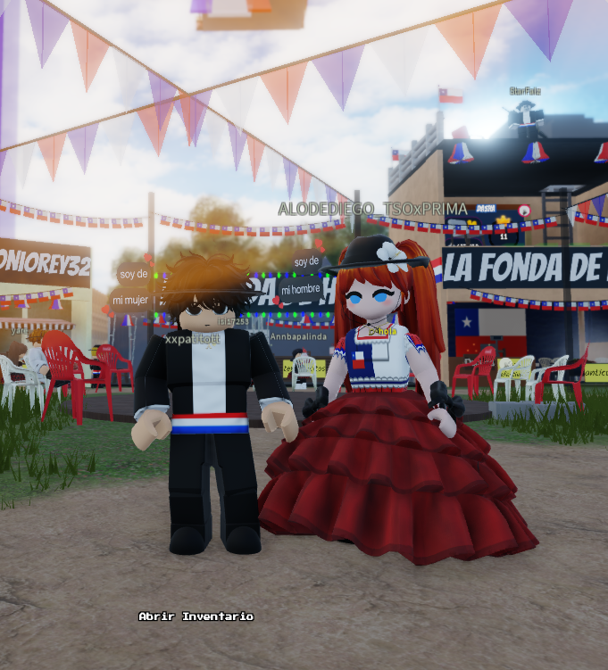
18Fiestas costumbristas 💃
Cuando fuimos a las fondas. 🇨🇱❤️ Nos vestimos para bailar cueca 💃🕺, anduvimos levantando polvo y por supuesto, probando comidas. 😂 Un día diferente y muy bonito que disfruté muchísimo contigo. 🥰
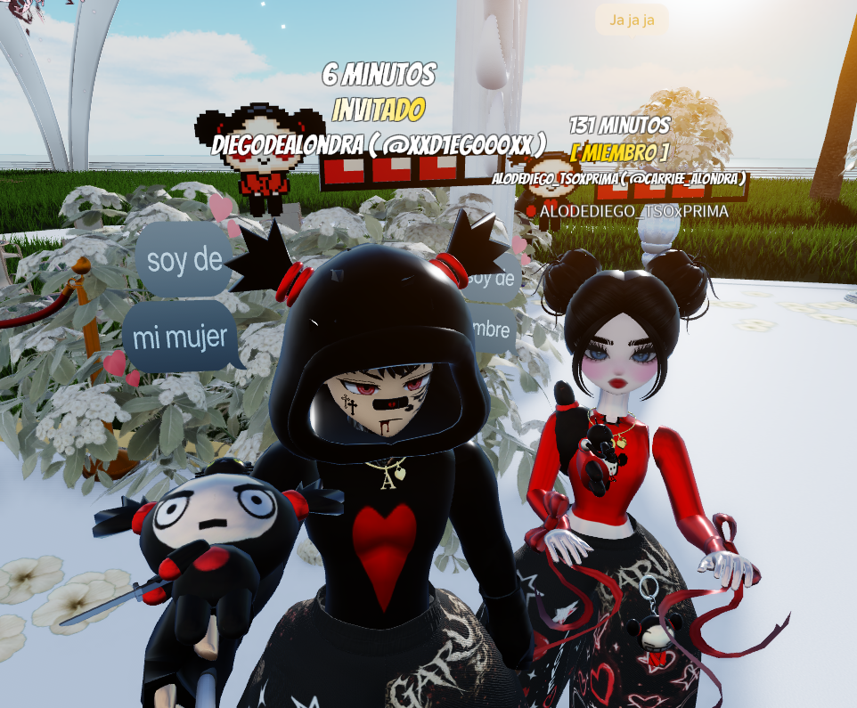
19Match 🖤
Nosotros bien wapos con nuestros trajes de Pucca y Garu. 🖤❤️ Porque hasta para vestirnos nos gusta hacer match. 😏🥰
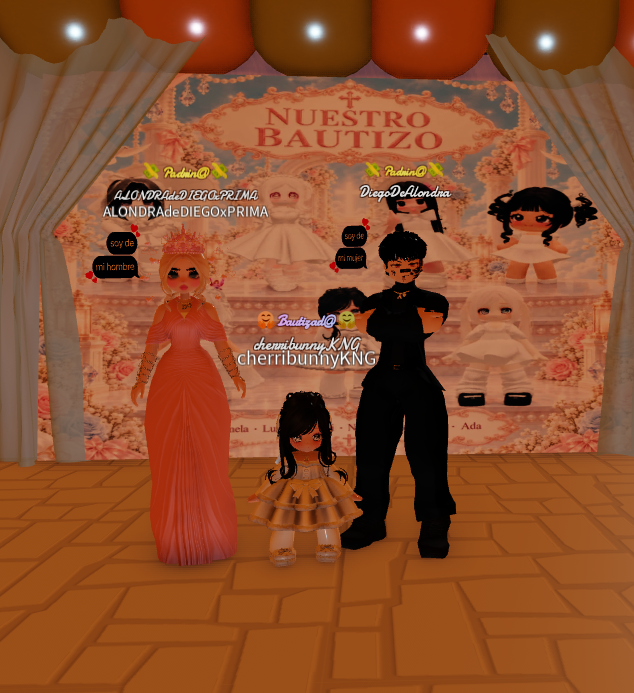
20Padrinos 🎓
Cuando nos eligieron como pareja para ser padrinos. ❤️ Fue un momento muy lindo y además, el discurso que te sacaste… la rompiste. 👏🥰 Me encantó poder compartir ese momento contigo. ✨
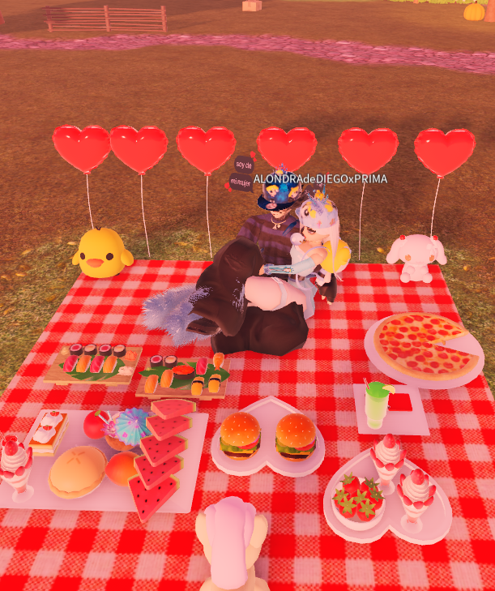
21Cita romántica 🧺
Un picnic romántico, chancheando con el amor de mi vida. 🧺🌹❤️ Un momento tranquilo, bonito y especial simplemente por estar contigo. 🥰
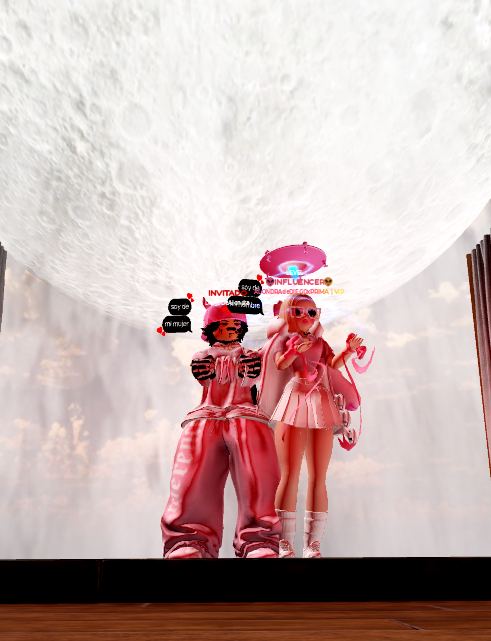
22Un recuerdo especial 💃
Esta foto es de un día que disfruté muchísimo porque estuvimos bailando. 💃❤️ Ese día me sentí muy cerca tuyo, incluso más de lo normal. 🥰 Y tengo que decirlo… me encanta muchísimo ese outfit que llevas. 😍❤️
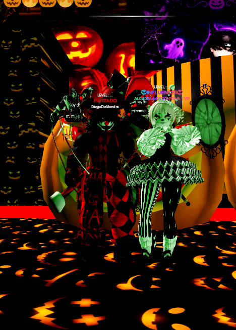
23Disfraz 🤡
Me gusta muchísimo cuando nos vestimos de payasos. 🤡❤️ Siento que nuestros outfits quedaron demasiado lindos y que juntos nos vemos muy tiernos. 🥰✨
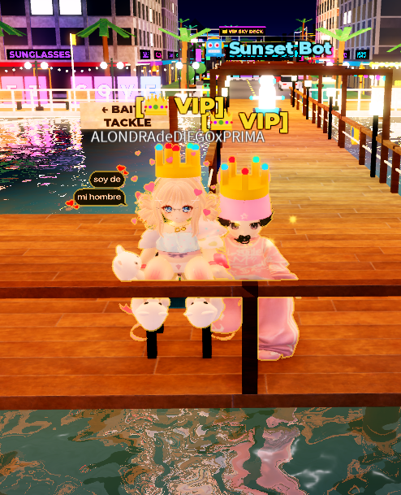
24Otro recuerdo 🏊♂️
Cuando fuimos a la piscina 🏊♀️, estuvimos entrenando en el gym 💪 y también jugamos golf. ⛳😂 Un día con un poquito de todo, pero sobre todo con buena compañía. ❤️
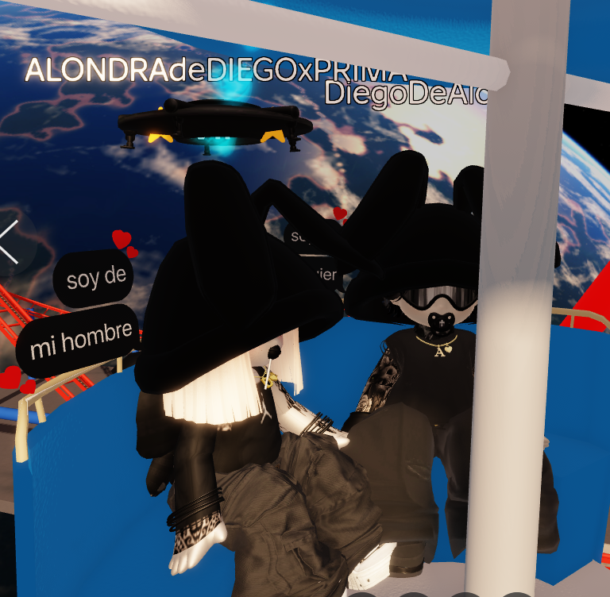
25Bailecito 🎡
Estuvimos bailando 💃🕺, nos dimos una vuelta en la rueda 🎡 y tuvimos una conversación muy bonita. ❤️ Otro de esos momentos sencillos que terminé disfrutando muchísimo porque estaba contigo. 🥰
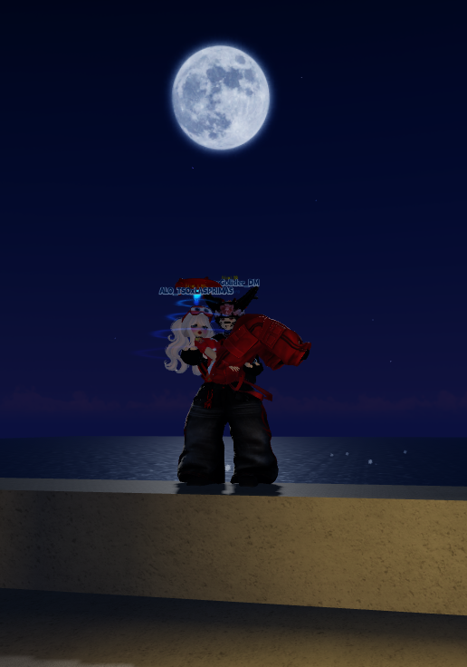
26Recuerdo 🌙
Esta foto me gusta muchísimo. ❤️ La luna de fondo 🌙✨ y nosotros compartiendo otro pequeño momento juntos. Tiene algo especial que hace que siempre quiera guardarla. 🥰
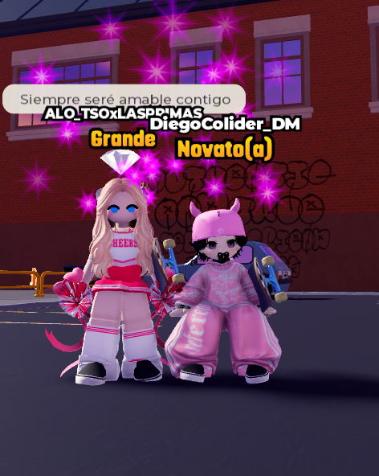
27Skate 🛹
El día que anduvimos en skate. 🛹❤️ Ese día me encantó muchísimo. Fue un día bonito, divertido y de esos que disfruto especialmente porque pude compartirlo contigo. 🥰✨
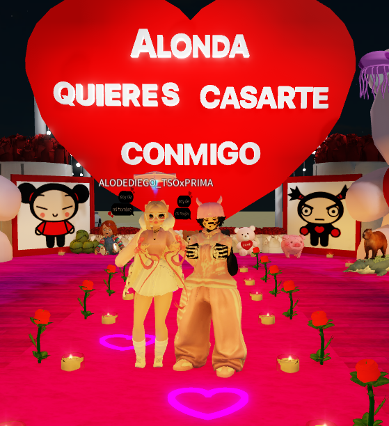
28Matrimonio 💍
Uno de mis días favoritos. ❤️ El día en que te pedí que fueras mi esposa. 💍🥹 Fui tan feliz cuando me diste el “sí”… y sigo sintiendo esa misma felicidad al recordarlo. ❤️ Ese momento significa muchísimo para mí porque fue otro paso en nuestra historia. 💕
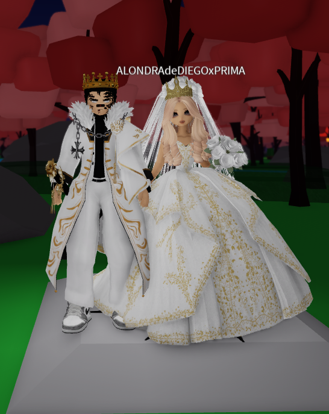
29Outfit Reyes 👑
Un pequeño recuerdo de nuestros trajes de nuestra primera boda, la boda de reyes. 👑💍❤️ Míranos… bien elegantes y listos para convertirnos en esposos. 🥰✨
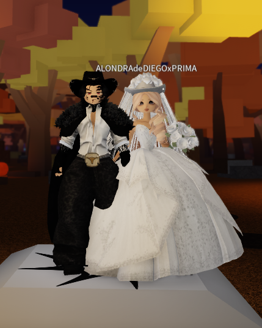
30Outfit vaqueros 🤠
Y aquí tenemos nuestros trajes de la segunda boda, esta vez de vaqueros. 🤠💍❤️ Otro pequeño recuerdo de uno de esos días que voy a guardar con muchísimo cariño. Dos bodas, dos outfits diferentes… pero la misma persona con la que quiero compartirlos: tú. 🥰❤️
Y ESTO ES SOLO EL COMIENZO
Todavía nos quedan muchas páginas
Quiero seguir llenando nuestra historia
de momentos,
fotografías,
risas,
aventuras
y recuerdos que algún día
podamos mirar juntos.
Porque si estos son solamente
algunos de nuestros recuerdos,
imagina todos los que todavía
nos quedan por crear.
Quiero que algún día podamos mirar
todo esto juntos y decir:
"Mira todo lo que hemos vivido."
Tu esposo, Diego ❤️